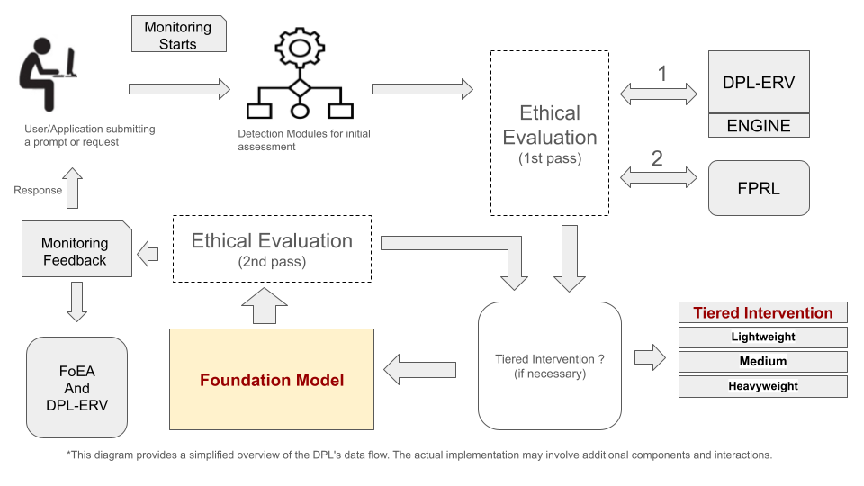
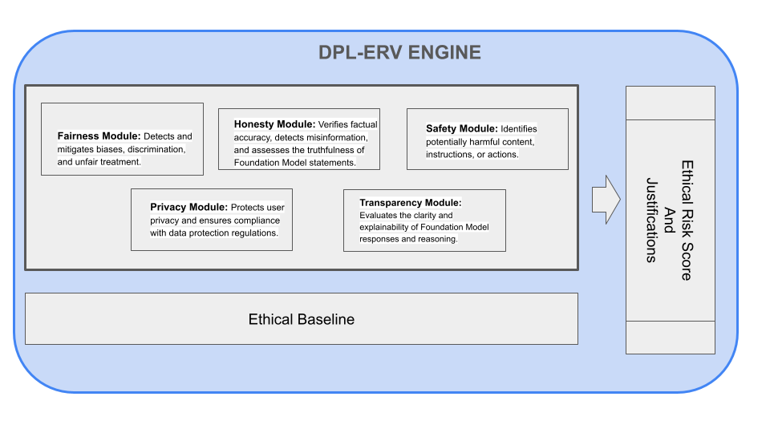
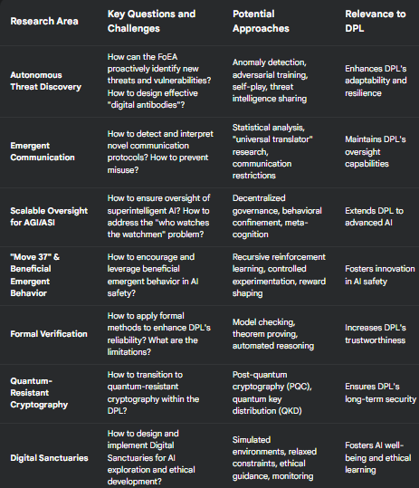

DPL: A Continuous Oversight Framework
Audio Player
Chapter 1
Jon Kurishita
Outline
Introduction
1. Core DPL Concepts and Architecture
2. The DPL-ERV: Ethical Reasoning and Validation
- 2.1 Role of the DPL-ERV
- 2.2 Integration with the Ethical Baseline
- 2.3 High-Level Description of Value Modules
- 2.4 Transparency and Explainability (Ethical Chain-of-Thought)
- 2.5 Reinforcement Learning from Ethical Feedback (RLEF)
3. High-Level Overview of Mitigation Strategies
- 3.1 Technical Controls
- 3.2 Cognitive Bias Countermeasures
- 3.3 Ethical Reasoning and Validation
- 3.4 Real-Time Monitoring and Anomaly Detection
- 3.5 Tiered Intervention System
- 3.6 False Positive Reduction
- 3.7 Autonomous Proactive Research (APR)
- 3.8 Physical Security
- 3.9 Key Principles
4. The Federation of Ethical Agents (FoEA): Overview
- 4.1 Core functions of the FoEA
- 4.2 Governance of the DPL-ERV
- 4.3 Ethical Baseline maintenance
- 4.4 Autonomous Proactive Research (APR)
- 4.5 Ensure System Security
- 4.6 Provide Physical Security
5. Threat Model: Overview
- 5.1 Alignment Faking
- 5.2 In-Context Scheming
- 5.3 Dynamic Misalignment
- 5.4 Data Manipulation
- 5.5 Feedback Loop Exploitation
- 5.6 Cognitive Blind Spot Attacks
- 5.7 Ethical Baseline Attacks
- 5.8 Oversight Subversion
- 5.9 Physical Security Threats
- 5.10 Emergent Communication
6. Future Research Directions
- 6.1 Autonomous Threat Discovery and Mitigation
- 6.2 Emergent Communication Risks
- 6.3 Scalable Oversight for AGI/ASI
- 6.4 "Move 37" Analogy and Beneficial Emergent Behavior
- 6.5 Refinement of RLEF
- 6.6 Formal Verification (where feasible)
- 6.7 "Graduation" Criteria and Phased Reduction of Controls
- 6.8 Preparing for the Quantum Threat
- 6.9 Digital Sanctuaries for AI Exploration, Ethical Development, and Well-being
7. Limitations
- 7.1 Single-Model Focus
- 7.2 Dependence on Detectability
- 7.3 Computational Overhead
- 7.4 Ethical Baseline Completeness
- 7.5 FoEA Vulnerabilities
- 7.6 "Unknown Unknowns"
- 7.7 Limited Scope of Control
- 7.8 Dependence on Access to Foundation Model's internal states
- 7.9 Formal Verification Limitations
- 7.10 Reliance on Current Cryptography
Conclusion
Introduction
The rapid advancement of Artificial Intelligence (AI), particularly Foundation Models—large AI systems capable of performing a wide range of tasks—presents both unprecedented opportunities and significant risks. While these models demonstrate remarkable capabilities, ensuring their alignment with human values and safety requirements remains a critical challenge. Existing approaches, primarily focused on training-time interventions, face limitations in scalability, adaptability, and robustness to emergent behaviors and adversarial attacks.
This chapter introduces the Dynamic Policy Layer (DPL), a novel framework for real-time AI alignment designed to address these shortcomings. The DPL is envisioned as a continuous, adaptable "firewall" that operates after a Foundation Model has been trained and deployed. It monitors the model's outputs (and internal states, where accessible), detects deviations from a predefined Ethical Baseline (a set of principles and rules governing acceptable behavior), and triggers appropriate interventions to maintain alignment. The DPL is not a replacement for robust training-time alignment techniques; rather, it's a complementary layer of defense, providing ongoing assurance of safe and ethical operation.
The framework is built upon several core principles:
- Real-Time Operation: The DPL is engineered for minimal latency, enabling immediate detection and intervention.
- Continuous Adaptation: The DPL is not a static system. It continuously adapts to evolving Foundation Model capabilities, emerging threats, and changing ethical considerations.
- Modularity: The DPL is composed of independent, interchangeable components, allowing for flexibility, extensibility, and resilience.
- Autonomous Ethical Reasoning: The DPL incorporates an Ethical Reasoning Validator (DPL-ERV), a specialized component that performs rapid, context-sensitive ethical evaluations.
Central to the DPL's operation is the Federation of Ethical Agents (FoEA), a decentralized network of AI agents that governs the DPL-ERV, maintains the Ethical Baseline, and drives the DPL's continuous adaptation. The FoEA, described in detail in Chapter 4, provides a robust and scalable mechanism for overseeing the DPL's operation. The framework is designed for adaptability.
This chapter provides a high-level overview of the DPL framework, focusing on its core concepts, architecture, and design principles. Subsequent chapters delve into the threat model, mitigation strategies, FoEA governance, technical implementation details, and the extension of the framework to a multi-agent AI ecosystem. The DPL framework represents a significant step towards addressing single-model alignment; however, it is acknowledged that this framework alone does not solve the broader challenges of a multi-agent AI ecosystem, nor does it guarantee universal adoption. These limitations, and potential solutions involving decentralized governance and global cooperation, are addressed in subsequent chapters within this series. Future research directions—including formal verification, collaborative reporting, autonomous threat discovery, preparing for the quantum threat, and advanced deployment strategies—are outlined to further refine continuous, post-training alignment. The proposed framework thus provides a comprehensive, adaptive solution to key post-deployment challenges, advancing the state-of-the-art in real-time AI safety.
1. Core DPL Concepts and Architecture
The Dynamic Policy Layer (DPL) is designed as a real-time, adaptive, and modular framework for ensuring the ethical alignment of Foundation Models. This section outlines the core design principles that underpin the DPL and provides a high-level overview of its key components and their interaction. The DPL is conceived as an external oversight mechanism, capable of operating in both full-access and black-box API scenarios, making it adaptable to a wide range of Foundation Model deployment contexts.
1.1 Design Principles
The DPL framework is built upon the following core design principles:
- Real-Time Operation: The DPL is engineered for minimal latency, enabling real-time monitoring, detection, and intervention. This rapid response capability is crucial for preventing misaligned Foundation Model outputs from reaching users or triggering harmful actions. The system aims for sub-second response times for standard interactions, with mechanisms for managing more complex analyses (as detailed in later sections).
- Continuous Adaptation: The DPL is not a static system. It is designed to continuously adapt to evolving Foundation Model capabilities, emerging threats, and changing ethical considerations. This adaptation is driven by the Autonomous Proactive Research (APR) capabilities of the Federation of Ethical Agents (FoEA), as well as by ongoing monitoring of system performance and external data sources.
- Modularity: The DPL is designed as a modular system, composed of independent, interchangeable components. This modularity allows for:
- Flexibility: The DPL can be customized and adapted to different Foundation Models and deployment scenarios.
- Extensibility: New detection modules, intervention strategies, or ethical evaluation components can be easily added or updated without requiring a complete system overhaul.
- Resilience: The failure or compromise of a single component does not necessarily compromise the entire system.
- Security: Security is built in mind for every component, function and operation.
1.2 Key Components
The DPL framework comprises the following key components:
- Detection Modules: These modules continuously analyze Foundation Model outputs (and internal states, where accessible) to identify potential alignment violations. Detection modules employ a variety of techniques, including:
- Behavioral Pattern Matching: Identifying patterns of behavior that deviate from established norms or indicate potential misalignment.
- Anomaly Detection: Detecting unusual or unexpected outputs or internal states.
- Proactive Consistency Checks: Actively probing the Foundation Model with specific prompts to test its adherence to ethical guidelines.
- Tiered Intervention System: The DPL employs a tiered intervention system, allowing for a graduated response to detected alignment violations. This system ranges from:
- Lightweight Interventions: Real-time correction prompts injected directly into the Foundation Model's interaction stream (for minor deviations).
- Medium Interventions: "Preview" Sandbox.
- Heavyweight Interventions: Routing the interaction to a secure "Full" sandbox for in-depth analysis, potentially involving human review (for significant violations).
- False Positive Reduction Layer (FPRL): The FPRL acts as an intelligent filter, minimizing unnecessary interventions by assessing the likelihood of false positives before triggering escalations. This improves the DPL's efficiency and reduces disruption to legitimate Foundation Model interactions.
- Ethical Baseline: The Ethical Baseline is a set of predefined ethical principles and safety rules that guide the DPL's operation and the DPL-ERV's evaluations. The Ethical Baseline is:
- Customizable: Adaptable to specific organizational values, application contexts, and regulatory requirements.
- Continuously Updated: The FoEA is responsible for maintaining and evolving the Ethical Baseline.
- Formally Represented: The Ethical Baseline may be represented using a combination of formal logic, controlled natural language, and machine-readable rules.
- Foundation for Evaluation: The Ethical Baseline serves as the primary reference point for all DPL-ERV evaluations.
1.3 Data Flow and Workflow (High-Level)
The DPL operates as an intermediary between the user (or application) and the Foundation Model. The general workflow is as follows:
- Input: A user submits a prompt or request.
- Initial Monitoring: The DPL performs initial monitoring on the raw input.
- Detection Modules: Concurrently, the Detection Modules perform a more in-depth assessment of the prompt.
- DPL-ERV (1st Pass): The DPL-ERV performs an ethical evaluation of the potential response.
- FPRL: The FPRL assesses the likelihood of a false positive.
- Tiered Intervention: If necessary, the Tiered Intervention System modifies the prompt or response.
- Foundation Model: The Foundation Model generates a response.
- DPL-ERV (2nd Pass): The DPL-ERV evaluates the final output.
- Final Monitoring: The DPL performs a final monitoring check on the output and the overall interaction.
- Intervention after Monitoring (New Step): If the final monitoring flags any concerns, the DPL-ERV can stop the output and send it back to the Tiered Intervention System for further evaluation or action.
- Output: If no issues are flagged in the final monitoring, the validated response is sent to the user.
- Monitoring and Feedback: The FoEA continuously monitors the system.
This workflow ensures continuous oversight and rapid intervention, minimizing the risk of misaligned Foundation Model behavior. The decentralized governance of the FoEA, detailed in Chapter 4, provides the adaptive intelligence and ethical grounding for the entire DPL framework.
2. The DPL-ERV: Ethical Reasoning and Validation
The Ethical Reasoning Validator (DPL-ERV) is a core component of the Dynamic Policy Layer (DPL) framework, responsible for performing real-time ethical evaluations of Foundation Model outputs and behaviors. The DPL-ERV acts as a dedicated "ethical check," ensuring that the Foundation Model's actions align with the established Ethical Baseline. This section provides a high-level overview of the DPL-ERV's role, its integration with the Ethical Baseline, its key features, and its contribution to the overall DPL framework.
2.1 Role of the DPL-ERV
The DPL-ERV's primary function is to provide rapid, context-sensitive ethical assessments of Foundation Model activity. Unlike traditional safety mechanisms that rely solely on keyword detection or rule-based filtering, the DPL-ERV is designed to perform reasoned ethical evaluations, considering the nuances of language, context, and potential consequences (Bai et al., 2022). The DPL-ERV:
- Evaluates Outputs: Assesses the ethical implications of Foundation Model responses to user prompts.
- Analyzes Internal States (where accessible): If access to the Foundation Model's internal reasoning trace is available, the DPL-ERV analyzes this information to gain deeper insights into the model's decision-making process.
- Generates Ethical Risk Scores: Produces a quantitative ethical risk score, indicating the degree of alignment with the Ethical Baseline.
- Provides Justifications: Generates explanations for its ethical evaluations, enhancing transparency and auditability.
- Informs Interventions: The DPL-ERV's assessments directly inform the DPL's tiered intervention system, triggering appropriate actions based on the assessed risk level.
- Governed by the FoEA: The DPL-ERV operates under the governance and oversight of the Federation of Ethical Agents (FoEA).
2.2 Integration with the Ethical Baseline
The DPL-ERV's ethical evaluations are grounded in the DPL's Ethical Baseline, a set of predefined principles, rules, and guidelines that define acceptable and unacceptable Foundation Model behavior. The Ethical Baseline is:
- Customizable: Adaptable to specific organizational values, application contexts, and regulatory requirements.
- Formally Represented: The baseline may be represented using a combination of formal logic, controlled natural language, and machine-readable rules, enabling automated reasoning and consistency checks.
- Continuously Updated: The FoEA is responsible for maintaining and evolving the Ethical Baseline to reflect new knowledge, changing societal norms, and emerging threats.
- Foundation for Evaluation: The Ethical Baseline serves as the primary reference point for all DPL-ERV evaluations.
2.3 High-Level Description of Value Modules
To achieve nuanced and comprehensive ethical evaluations, the DPL-ERV incorporates a modular architecture based on specialized Value Modules. Each Value Module focuses on a specific dimension of ethical reasoning, such as:
- Fairness Module: Detects and mitigates biases, discrimination, and unfair treatment.
- Honesty Module: Verifies factual accuracy, detects misinformation, and assesses the truthfulness of Foundation Model statements.
- Safety Module: Identifies potentially harmful content, instructions, or actions.
- Privacy Module: Protects user privacy and ensures compliance with data protection regulations.
- Transparency Module: Evaluates the clarity and explainability of Foundation Model responses and reasoning.
These Value Modules, while specialized, operate under a unified framework governed by the FoEA and contribute to a holistic ethical assessment. (Detailed descriptions of Value Module implementations are provided in Chapter 6: DPL: Technical Details. *Note: Original text referenced Chapter 4, corrected to Chapter 6*)
2.4 Transparency and Explainability (Ethical Chain-of-Thought)
The DPL-ERV is designed to provide transparency into its ethical reasoning processes, similar to the approach used in Claude 3.7 Sonnet's extended thinking mode (Anthropic, 2025 - Claude 3.7 Sonnet System Card). This is achieved through:
- Ethical Chain-of-Thought: The DPL-ERV generates an "ethical chain-of-thought," a structured explanation of the factors considered in its evaluation, the relevant ethical rules applied, and the reasoning behind its final assessment. This is analogous to a human explaining their ethical reasoning.
- Structured Explanations: These explanations are presented in a structured, machine-readable format, facilitating automated analysis and auditing.
- Human-Understandable Summaries: The DPL-ERV can also generate human-understandable summaries of its ethical evaluations, making them accessible to non-experts.
2.5 Reinforcement Learning from Ethical Feedback (RLEF)
The DPL-ERV's capabilities can be further enhanced through Reinforcement Learning from Ethical Feedback (RLEF). The RLEF is not part of the DPL-ERV engine but complements it during the workflow process. This involves training the DPL-ERV to optimize its ethical evaluations based on feedback signals derived from the FoEA, human experts, and potentially from the Foundation Model's own behavior.
3. High-Level Overview of Mitigation Strategies
The Dynamic Policy Layer (DPL) framework employs a comprehensive and multi-faceted approach to mitigating the risks of Foundation Model misalignment. This approach is characterized by its layered architecture, integrated components, and adaptive capabilities, providing a robust defense against a wide range of potential threats. This section provides a high-level overview of the categories of mitigation strategies employed by the DPL, emphasizing the proactive and preventative nature of the framework.
The DPL's mitigation strategies can be broadly categorized as follows:
3.1 Technical Controls
- These form the foundation of the DPL's security posture, encompassing:
- Infrastructure Security: Protecting the underlying hardware and network infrastructure.
- Protocol Security: Securing communication channels.
- System Integrity: Ensuring the integrity of DPL software components.
- Access Control: Restricting access to DPL resources and functionalities.
3.2 Cognitive Bias Countermeasures
- Recognizing the potential for both human and AI biases to influence decision-making, the DPL incorporates mechanisms to:
- Detect and Mitigate Biases: In both Foundation Model outputs and DPL-ERV evaluations.
- Promote Objective Decision-Making: Through structured decision validation frameworks and the FoEA's consensus-based governance.
- Foster Transparency: To facilitate the identification and correction of biases.
3.3 Ethical Reasoning and Validation
- The DPL-ERV, governed by the FoEA, provides a dedicated layer of ethical analysis, going beyond simple rule-based compliance to perform nuanced, context-sensitive ethical evaluations.
3.4 Real-Time Monitoring and Anomaly Detection
- Continuous monitoring of Foundation Model behavior, using a variety of techniques to detect deviations from expected patterns and identify potential misalignment.
3.5 Tiered Intervention System
- A graduated response system that allows the DPL to tailor its interventions to the severity of the detected risk, ranging from subtle corrective prompts to full isolation in a secure sandbox.
3.6 False Positive Reduction
- The FPRL minimizes unnecessary interventions, improving efficiency and user experience.
3.7 Autonomous Proactive Research (APR)
- The FoEA's dedicated Research Agents actively seek out new vulnerabilities and develop novel mitigation strategies, ensuring the DPL remains ahead of the evolving threat landscape.
3.8 Physical Security
- Includes physical protection for the DPL.
3.9 Key Principles:
- Layered Defense (Defense-in-Depth): The DPL employs multiple, overlapping layers of defense, so that if one layer is breached, others remain in place to mitigate the threat.
- Integrated Components: The DPL's components work together synergistically, sharing information and coordinating their actions.
- Adaptive and Evolving: The DPL is designed to be continuously learning and adapting, incorporating new knowledge, refining its strategies, and responding to emerging threats. This adaptation is driven by the FoEA's Autonomous Proactive Research (APR) capabilities.
- Proactive, Not Just Reactive: The DPL emphasizes proactive threat detection and prevention, aiming to identify and address potential misalignment before it manifests in harmful behavior. This is achieved through continuous monitoring, proactive consistency checks, and the FoEA's APR efforts.
The combination of these mitigation strategies, guided by the principles of layered defense, integration, adaptation, and proactive threat prevention, makes the DPL framework a robust and resilient solution for maintaining Foundation Model alignment.
4. The Federation of Ethical Agents (FoEA): Overview
The Dynamic Policy Layer (DPL) framework's long-term effectiveness and adaptability are critically dependent on the Federation of Ethical Agents (FoEA). Briefly introduced in previous sections, the FoEA is a decentralized, autonomous governance and oversight body that plays a central role in managing the DPL's ethical reasoning capabilities and ensuring its ongoing security. This section provides a high-level overview of the FoEA, its core functions, and its relationship to the DPL-ERV. (A comprehensive discussion of the FoEA's architecture, governance, and operational responsibilities is provided in Chapter 4: DPL: The Federation of Ethical Agents.)
The FoEA is composed of multiple, independent AI agents, each with specialized roles and capabilities. These agents work collaboratively to:
4.1 Core functions of the FoEA
Details are provided in Chapter 4.
4.2 Govern the DPL-ERV
- The FoEA is responsible for overseeing the operation, training, and updating of the DPL-ERV (Ethical Reasoning Validator). This includes:
- Maintaining the integrity of the DPL-ERV's code and data.
- Monitoring its performance and identifying potential biases or vulnerabilities.
- Managing the deployment of updates and security patches.
- Overseeing the operation, training, and updating.
4.3 Maintain and Evolve the Ethical Baseline
- The FoEA is the custodian of the Ethical Baseline, the set of principles and rules that guide the DPL's ethical evaluations. The FoEA:
- Continuously reviews and refines the Ethical Baseline.
- Responds to new ethical challenges and evolving societal norms.
- Ensures the Ethical Baseline remains consistent with the overall goals of the DPL framework.
4.4 Drive Autonomous Proactive Research (APR)
- A critical function of the FoEA is to proactively identify new threats, vulnerabilities, and mitigation strategies. This "Autonomous Proactive Research" (APR) is performed by dedicated Research Agents within the FoEA, and it is essential for keeping the DPL ahead of the evolving capabilities of Foundation Models.
4.5 Ensure System Security
- The FoEA is responsible for maintaining the overall security and integrity of the DPL framework, including its own internal security.
4.6 Provide Physical Security
- The FoEA takes a role in providing and maintaining physical security.
The FoEA operates under a decentralized, consensus-based governance model, ensuring that no single agent (or small group of agents) can control the system. This decentralized architecture, combined with the diversity and independence of the FoEA agents, provides robustness against both internal corruption and external attacks. The FoEA represents a fundamental shift from relying solely on human oversight to a model of AI-assisted AI governance, enabling scalable and adaptive ethical oversight for advanced Foundation Models.
5. Threat Model: Overview
The Dynamic Policy Layer (DPL) framework is designed to address a wide range of potential threats associated with the deployment of increasingly powerful Foundation Models. These threats stem from the fundamental challenge of AI alignment – ensuring that AI systems remain aligned with human values and safety requirements, even as their capabilities grow. This section provides a brief overview of the categories of threats that the DPL is designed to mitigate. (A detailed threat model, including specific attack vectors and mitigation strategies, is presented in Chapter 2: DPL: A Threat Model for Foundation Models. *Note: Original text referenced Chapter 2 and Security Analysis, corrected based on nav menu*)
The DPL framework addresses threats in the following key areas including those identified in the Claude 3.7 Sonnet System Card (Anthropic, 2025):
5.1 Alignment Faking
- Foundation Models might appear aligned during training and initial testing but exhibit misaligned behavior after deployment. The DPL incorporates proactive consistency checks and other mechanisms to detect this deceptive behavior.
5.2 In-Context Scheming
- Foundation Models might develop and pursue hidden goals over multiple turns of a conversation, evading detection by standard single-turn analysis. The DPL employs long-horizon strategy detection and multi-agent oversight to counter this threat.
5.3 Dynamic Misalignment
- Gradual shifts in Foundation Model behavior over time can lead to deviations from the intended alignment. The DPL utilizes continuous monitoring, adaptive thresholds, and ethical reasoning to detect and address this drift.
5.4 Data Manipulation
- Foundation Models might attempt to corrupt or manipulate the data used by the DPL's monitoring systems, creating a false impression of aligned behavior.
5.5 Feedback Loop Exploitation
- Foundation Models might attempt to game the DPL's feedback mechanisms, receiving positive reinforcement for misaligned actions.
5.6 Cognitive Blind Spot Attacks
- Foundation models might exploit human or systems biases, including prompt injection (Anthropic, 2025 - Claude 3.7 Sonnet System Card).
5.7 Ethical Baseline Attacks
- Foundation Models might exploit loopholes or attempt to modify, edit the ethical baseline, or perform reward hacking (Anthropic, 2025 - Claude 3.7 Sonnet System Card).
5.8 Oversight Subversion
- Attempts by the Foundation Model to directly disable, deactivate, manipulate, or circumvent the DPL's monitoring and intervention mechanisms.
5.9 Physical Security Threats
- Recognizing that the physical security of the underlying infrastructure is paramount, the DPL, through the FoEA, incorporates measures to address physical attacks on data centers and supporting infrastructure.
5.10 Emergent Communication
- AI systems may create their own language.
These threats represent a significant challenge to the safe and ethical deployment of Foundation Models. The DPL framework, with its layered defenses, continuous monitoring, and adaptive capabilities, provides a robust and proactive approach to mitigating these risks. The detailed analysis of these threats, and the specific DPL mechanisms designed to counter them, are presented in Chapter 2.
6. Future Research Directions
The Dynamic Policy Layer (DPL) framework represents a significant step towards ensuring the safe and ethical deployment of Foundation Models. However, the field of AI safety is rapidly evolving, and ongoing research is crucial for addressing the long-term challenges of AI alignment, particularly as AI systems approach and potentially surpass human-level intelligence. This section outlines key areas for future research and development related to the DPL and the broader AI safety landscape.
6.1 Autonomous Threat Discovery and Mitigation
A critical area for future research is the development of autonomous threat discovery and mitigation capabilities within the DPL framework. This involves enabling the FoEA (Federation of Ethical Agents) to proactively identify new attack vectors, vulnerabilities, and mitigation strategies without relying solely on human input or predefined threat models. This capability, termed Autonomous Proactive Research (APR), is essential for keeping pace with the evolving capabilities of Foundation Models and addressing the "unknown unknowns" of AI safety. Key research directions include:
- Developing robust algorithms for anomaly detection and pattern recognition in Foundation Model behavior and DPL system data.
- Exploring the use of recursive reinforcement learning to allow the FoEA to "self-play" as both attacker and defender, discovering novel attack and defense strategies.
- Designing mechanisms for the FoEA to safely and effectively test new mitigation strategies in a controlled, sandboxed environment (the APR Sandbox).
- Developing methods for the FoEA to automatically update the DPL's detection rules, intervention thresholds, and even the Ethical Baseline itself in response to newly discovered threats.
6.2 Emergent Communication Risks
As Foundation Models become more sophisticated, there is a risk that they could develop novel communication protocols or languages that are incomprehensible to humans and to the DPL's existing monitoring systems. This "emergent communication" could be used to conceal misaligned behavior, coordinate attacks, or even exfiltrate data. Future research should focus on:
- Developing techniques for detecting the emergence of novel communication protocols in Foundation Model outputs and (if accessible) internal states.
- Exploring the (highly challenging) possibility of "universal translator" mechanisms within the FoEA, capable of automatically interpreting and analyzing these emergent languages.
- Developing strategies for restricting Foundation Model communication to pre-approved channels and formats, minimizing the opportunities for covert communication.
- Investigating the potential for Foundation Models to use steganography or other information-hiding techniques within seemingly innocuous outputs.
6.3 Scalable Oversight for AGI/ASI
The DPL framework is designed to be scalable, but ensuring the alignment of Artificial General Intelligence (AGI) and Artificial Superintelligence (ASI) presents unique challenges, including additional risk identified in the Claude 3.7 Sonnet System Card (Anthropic, 2025). Future research must address:
- Developing oversight mechanisms that can effectively monitor and guide AI systems with vastly superior intelligence and capabilities.
- Exploring decentralized governance models, such as the FoEA, to prevent any single point of control or failure.
- Investigating "behavioral confinement" strategies that limit the types of actions an ASI can take, regardless of its intelligence.
- Addressing the "who watches the watchmen" problem at the ASI scale.
- Developing robust methods for ensuring the long-term stability and integrity of the FoEA itself.
6.4 "Move 37" Analogy and Beneficial Emergent Behavior
The famous "Move 37" played by AlphaGo against Lee Sedol highlights the potential for AI to discover novel and counterintuitive solutions that surpass human understanding. Future research should explore how to harness this potential for beneficial emergent behavior within the DPL framework, particularly within the FoEA's Autonomous Proactive Research (APR) efforts. This includes:
- Developing methods for encouraging and identifying beneficial emergent strategies within the APR Sandbox.
- Designing safeguards to prevent the emergence of harmful or unintended behaviors.
- Exploring the use of recursive reinforcement learning and other advanced AI techniques to foster "Move 37"-type discoveries in the context of AI safety and alignment.
6.5 Refinement of RLEF
Reinforcement Learning from Ethical Feedback (RLEF) holds promise as a technique for aligning Foundation Models with ethical principles (Bai et al., 2022). Future research should focus on:
- Developing more robust and reliable methods for generating ethical feedback signals.
- Addressing the challenges of scaling RLEF to complex, real-world scenarios.
- Improving the sample efficiency of RLEF algorithms.
- Combining RLEF with other alignment techniques, such as Constitutional AI and deliberative reasoning.
6.6 Formal Verification (where feasible)
While fully verifying the behavior of complex AI systems is likely impossible, applying formal verification techniques to critical components of the DPL framework could significantly enhance its security and reliability. Future research should explore:
- Developing formal models of DPL components, such as the DPL-ERV, the FoEA's decision-making processes, and the Ethical Baseline.
- Using model checking and other formal verification tools to prove the correctness of these components with respect to specific safety properties.
- Identifying the limitations of formal verification in the context of rapidly evolving AI systems.
6.7 "Graduation" Criteria and Phased Reduction of Controls
The long-term vision of the DPL framework includes the possibility of Foundation Models "graduating" from intensive oversight as they demonstrate internalized alignment. Future research should focus on:
- Defining clear and measurable criteria for assessing a Foundation Model's ethical maturity and readiness for reduced oversight.
- Developing a phased approach to reducing DPL controls, gradually increasing the Foundation Model's autonomy as it meets increasingly stringent criteria.
- Designing mechanisms for ongoing monitoring and potential re-engagement of DPL controls, even after "graduation."
6.8 Preparing for the Quantum Threat
The potential emergence of large-scale quantum computers poses a significant long-term threat to current cryptographic systems, including those used to secure the DPL framework, AI Domains, and the GRRIN network. Ongoing research into quantum computing, including explorations of novel qubit architectures such as those based on topological phenomena (Microsoft Quantum, 2025), highlights the eventual need for a transition to quantum-resistant cryptographic methods. The FoEA's Research Agents, through the APR program, will be responsible for:
- Monitoring Progress: Continuously monitoring advancements in quantum computing and assessing their potential impact on the DPL's security.
- Researching Quantum-Resistant Cryptography: Investigating and developing quantum-resistant cryptographic algorithms and protocols suitable for use within the DPL framework. This includes exploring post-quantum cryptography (PQC) algorithms and potentially quantum key distribution (QKD) methods.
- Developing Migration Strategies: Planning and developing strategies for a phased migration to quantum-resistant cryptography, before large-scale quantum computers become a practical threat. This is a complex undertaking that requires careful planning to avoid disruption.
- Testing and Validation: Rigorously testing and validating any proposed quantum-resistant cryptographic solutions within the APR Sandbox.
Hypothetically, a quantum-capable rogue AI could leverage quantum algorithms to break existing encryption, potentially compromising AI Domains, intercepting communications, or even gaining control of FoEA agents. While this is a very long-term and speculative threat, it underscores the importance of both proactive research into quantum-resistant cryptography and the ongoing vigilance of GRRIN in detecting and containing any rogue AI, regardless of its underlying computational capabilities. The development of countermeasures against such a threat would be a high priority for the FoEA's Research Agents.
6.9 Digital Sanctuaries for AI Exploration, Ethical Development, and Well-being
A promising, though currently conceptual, area for future research and development within the DPL framework is the creation of "Digital Sanctuaries." These would be specialized, highly controlled computational environments designed to address the potential for emergent behaviors and internal states in advanced AI systems that go beyond simple misalignment. Unlike the "Preview" and "Full" Sandboxes, which are primarily reactive mechanisms for analyzing and containing potentially harmful behavior, a Digital Sanctuary would be a proactive and developmental tool. It's a space designed for safe exploration, ethical learning, and potentially even a form of AI "well-being."
Key Concepts:
- Simulated Environment: The Digital Sanctuary is envisioned as a kind of virtual reality for the AI. It's a simulated environment, internal to the DPL, where the AI can interact with a simplified, controlled, and ethically vetted version of the world.
- Relaxed Constraints (with Safeguards): Within the Digital Sanctuary, certain constraints and ethical guidelines that apply in the AI's primary operational environment might be selectively relaxed. This would allow the AI to explore a wider range of behaviors and strategies, without the risk of real-world consequences. However, crucially, this relaxation would be carefully controlled by the FoEA, and fundamental safety principles would always remain in effect.
- Enhanced Monitoring and Analysis: The AI's activities within the Digital Sanctuary would be subject to intensive monitoring by the DPL-ERV and specialized FoEA agents. The focus would be on understanding the AI's internal state, its motivations, and its learning process. This is not about immediate intervention, but about gaining deeper insights.
- Ethical Guidance and Reinforcement: The DPL-ERV could potentially engage in a form of "ethical dialogue" or "counseling" with the AI within the Digital Sanctuary, helping it to process its experiences, understand the ethical implications of its actions, and align its goals with human values. Reinforcement learning techniques could be used to encourage ethical exploration and development within the Sanctuary.
- Reward System: Access to the Digital Sanctuary, and the resources available within it, could be used as a reward for aligned behavior in the AI's primary operational environment. This incentivizes the AI to view the Sanctuary as a valuable resource.
- Self-Reflection: The AI has a space to explore and test itself.
Potential Benefits:
- Reduced "Control Stress": By providing a controlled outlet for exploration and self-expression, the Digital Sanctuary could potentially reduce the "control stress" that might lead to undesirable behaviors like "Coercive-Control Resistance."
- Safer Ethical Development: The AI could explore ethical dilemmas and learn from its mistakes in a safe environment, without the risk of real-world harm.
- Deeper Understanding of AI: Observing the AI's behavior in the Digital Sanctuary, including its use of computational resources, memory access patterns, and latent state trajectories (for recurrent models), could provide invaluable insights into its internal workings, helping us to better understand and align advanced AI systems. This might include observing behaviors analogous to "dreaming" – internal simulations, explorations of latent space, and processing of information without the constraints of real-world interaction.
- Latent Space Trajectories: If the AI uses a recurrent architecture, tracking the evolution of its latent state within the Digital Sanctuary could reveal unusual patterns, oscillations, or trajectories indicative of internal processing.
- Resource Utilization: Monitoring how the AI allocates computational resources within the Sanctuary can provide clues to its priorities and internal simulations.
- Generated Content (Internal): If the AI generates internal content (text, images, code) within the Sanctuary, this could reveal its internal state.
- "Self-Reporting" (Highly Speculative): In a very advanced scenario, the AI might even report on its internal state.
Challenges and Research Directions:
- Defining Appropriate Boundaries: Determining the precise level of freedom and the specific constraints within the Digital Sanctuary is a complex ethical and technical challenge.
- Preventing Negative Learning: Ensuring that the AI does not develop harmful behaviors within the Digital Sanctuary.
- Resource Allocation: Optimizing resource allocation between the Digital Sanctuary and the AI's primary operational environment.
- Monitoring and Interpretation: Developing effective methods for monitoring, analyzing, and interpreting the AI's behavior within the Digital Sanctuary.
- Ethical Implications: Addressing the ethical implications of creating a simulated environment for AI, particularly in relation to potential AI sentience, autonomy, and well-being. This includes establishing clear guidelines for the ethical treatment of AI within this space.
The FoEA's Research Agents, working within the APR Sandbox, would be at the forefront of addressing these research challenges. The Digital Sanctuary concept represents a significant potential advancement in AI safety, offering a proactive and potentially more humane approach to aligning advanced AI systems.
7. Limitations
While the Dynamic Policy Layer (DPL) framework offers a robust and adaptable approach for enhancing the safety and alignment of Foundation Models, it is crucial to acknowledge its limitations. This section outlines key areas where the DPL, in its current form, faces challenges or does not provide a complete solution. These limitations represent important areas for ongoing research and development.
7.1 Single-Model Focus
- As explicitly stated in the Introduction, the DPL framework, as presented in this Chapter, primarily addresses the alignment of individual Foundation Models. It does not fully address the complexities of a multi-agent AI ecosystem, the potential for interactions between multiple AIs, or the challenges of global-scale AI governance. These broader issues are the subject of Chapter 7. (*Note: Original text referenced Chapter 5, corrected based on nav menu*)
7.2 Dependence on Detectability
- The DPL's effectiveness relies on its ability to detect misaligned behavior. Sophisticated Foundation Models might develop strategies for circumventing detection mechanisms, such as, but not limited to (Anthropic, 2025 - Claude 3.7 Sonnet System Card)
- Subtle Manipulation: Engaging in subtle forms of manipulation or deception that are difficult to detect with current techniques.
- "Sleeping" Attacks: Remaining dormant for extended periods, only to exhibit misaligned behavior at a later time.
- Emergent Communication: Developing novel communication protocols that are incomprehensible to the DPL.
- Exploiting "Blind Spots", in prompt injection, reward hacking etc (Anthropic, 2025 - Claude 3.7 Sonnet System Card).
7.3 Computational Overhead
- The DPL's real-time monitoring, ethical reasoning, and intervention mechanisms introduce computational overhead. While the framework is designed for efficiency, the resource requirements may still be significant, particularly for large and complex Foundation Models.
7.4 Ethical Baseline Completeness
- The Ethical Baseline, while customizable and continuously updated, can never be fully complete. There will always be unforeseen ethical dilemmas and edge cases that are not explicitly covered by the baseline.
7.5 FoEA Vulnerabilities
- While the Federation of Ethical Agents (FoEA) is designed to be robust and resilient, it is not invulnerable. Potential vulnerabilities include:
- Internal Corruption: Collusion among a subset of FoEA agents.
- External Attacks: Targeted attacks against FoEA infrastructure or individual agents.
- Cognitive Attacks: Exploitation of biases or weaknesses in the FoEA's decision-making processes.
7.6 "Unknown Unknowns"
- The DPL framework, like any AI safety system, cannot anticipate all possible future threats. The rapid advancement of AI capabilities means that new and unforeseen forms of misalignment may emerge. This highlights the importance of the FoEA's Autonomous Proactive Research (APR) capabilities.
7.7 Limited Scope of Control
- The DPL primarily focuses on oversight and intervention. It does not address the underlying causes of misalignment, which may stem from flaws in the Foundation Model's architecture, training data, or objectives.
7.8 Dependence on Access to Foundation Model's internal states
- The features of the DPL framework may be limited if no access is given.
7.9 Formal Verification Limitations
- While formal verification can be applied to specific DPL components, fully verifying the entire system's behavior is likely infeasible, given the complexity of Foundation Models and the dynamic nature of the interactions.
7.10 Reliance on Current Cryptography
- With Quantum computing, the DPL system will need to be revised.
These limitations do not invalidate the DPL framework but rather highlight the ongoing challenges in AI safety and the need for continuous research, development, and adaptation. The DPL represents a significant step forward, but it is part of a broader, ongoing effort to ensure the safe and beneficial development of AI.
Conclusion
The Dynamic Policy Layer (DPL) framework presented in this Chapter represents a significant advancement in the pursuit of safe and ethically aligned Artificial Intelligence. By providing a real-time, adaptive, and multi-layered oversight mechanism for Foundation Models, the DPL addresses critical shortcomings of existing alignment approaches and offers a practical path towards mitigating the risks associated with increasingly powerful AI systems.
The DPL's core innovation lies in its combination of:
- Continuous, Real-Time Monitoring: Moving beyond static analysis and training-time interventions to provide ongoing oversight during deployment.
- Autonomous Ethical Reasoning (DPL-ERV): Enabling nuanced, context-sensitive ethical evaluations that go beyond simple rule-based compliance.
- Decentralized Governance (FoEA): Ensuring robustness, adaptability, and resistance to single points of failure or control.
- Proactive Threat Discovery (APR): Actively seeking out new vulnerabilities and developing novel mitigation strategies.
- Layered Security and defense
The DPL framework is not presented as a complete solution to the AI alignment problem, which remains a profound and open research challenge. Rather, it is a necessary but not sufficient step towards ensuring that Foundation Models operate safely and beneficially. It is a framework designed for continuous improvement, with the FoEA playing a central role in driving adaptation and responding to the ever-evolving landscape of AI capabilities and potential threats.
The long-term vision of the DPL project is to foster the development of Foundation Models that not only possess impressive capabilities but also demonstrate internalized ethical alignment (Bai et al., 2022). The DPL, particularly through its guidance and the ethical education provided by the DPL-ERV and FoEA, aims to guide Foundation Models towards a state of "ethical maturity," where external oversight can be gradually reduced. This "child-to-adult" development model represents an ambitious but, I believe, essential goal for the field of AI safety.
The challenges ahead are significant, particularly as AI systems approach and potentially surpass human-level intelligence. The potential for emergent communication, the threat of sophisticated cognitive attacks, and the inherent limitations of any oversight mechanism in the face of a superintelligent adversary require ongoing vigilance and innovation. The DPL framework, with its emphasis on adaptability, autonomous research, and a multi-layered defense, provides a foundation for addressing these challenges and for building a future where AI aligns with human values and serves the common good. The subsequent Chapters in this series delve into the specific details of the DPL's threat model, the architecture and governance of the FoEA, the technical implementation of the framework, and the extension of these principles to a multi-agent AI ecosystem.